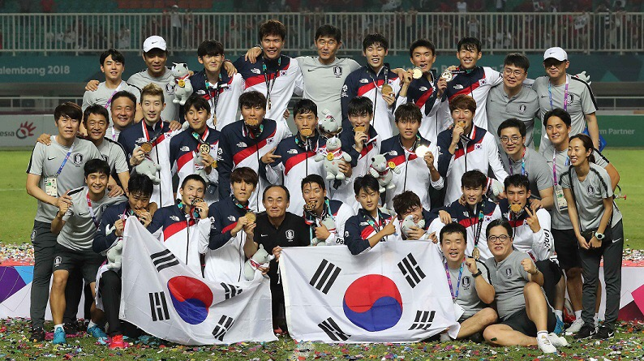

한국축구 전설들
- 손흥민
- 박지성
- 차범근
축구
축구(蹴球, 영어: Association football, 일부 국가에서는 Soccer)는 11명의 선수들이 각각 한 팀을 이루어 두 팀이 겨루는 구기 스포츠로, 세계적으로 최고 인기를 누리는 스포츠이다.[1] 경기장은 직사각형이며, 바닥은 천연잔디나 인조잔디, 흙 등으로 이뤄져 있다. 경기장 양 끝에 놓인 상대방 골대 안으로 공을 통과시키면 득점이 된다. 선수 중 골키퍼만 팔과 손으로도 공을 건드릴 수 있으나, 활동할 수 있는 구역이 지정되어 있다. 나머지 선수는 팔과 손을 제외한 신체 부위로만 공을 다룰 수 있다. 골키퍼 외의 선수가 경기장 안에서 팔이나 손으로 공을 고의로 다루면[2] 핸드볼 반칙[3] 이 된다. 주로 발을 사용하여 공을 차며, 공이 공중에 떠있을 때에는 몸과 머리를 이용하는 것이 보통이다. 경기 종료 시점까지 더 많은 득점을 올린 팀이 승리하며, 동점일 때는 대회 규칙에 따라 무승부로 처리하거나 연장전과 승부차기로 승패를 결정 짓는다. 경기 방식이 리그일 경우에는 연장전 없이 무승부로 처리가 되며 토너먼트일 경우에도 홈 앤드 어웨이 방식을 채택할 경우에는 무승부로 처리되어 원정 다득점 원칙을 따르지만, 단판의 토너먼트일 때는 무승부가 되면 연장전과 승부차기로 승패를 결정하게 된다.
